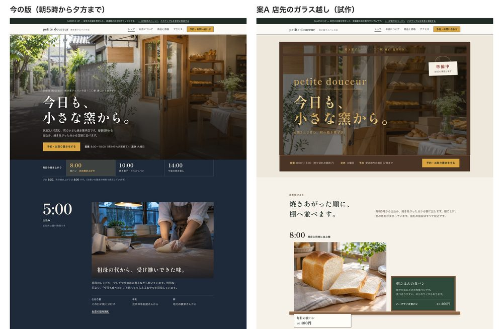
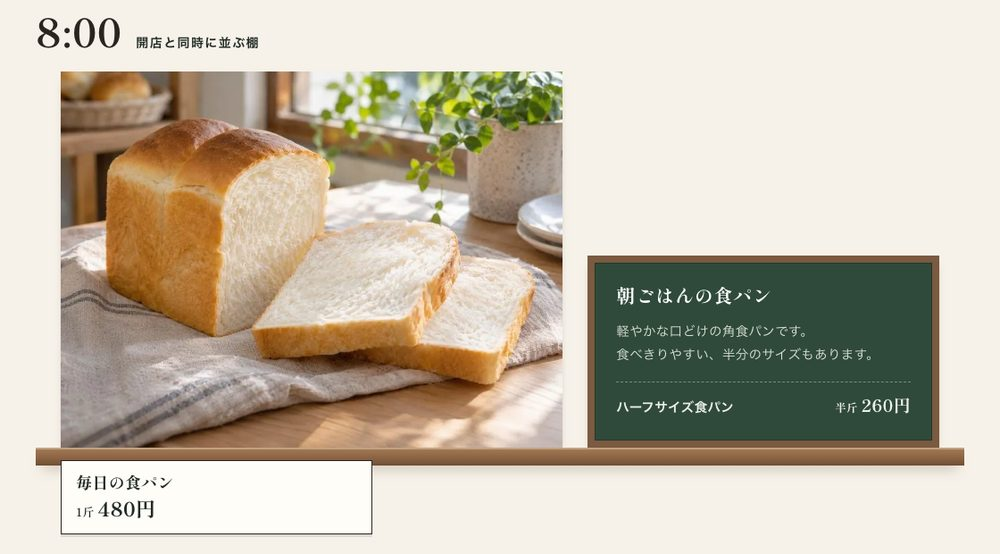
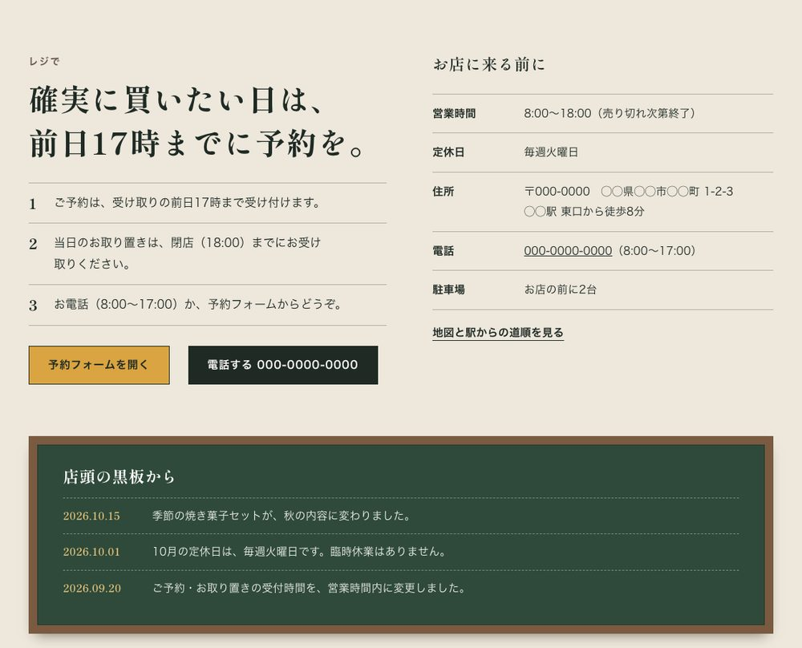
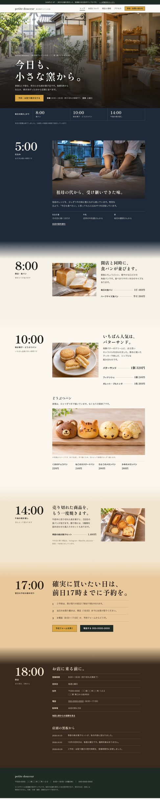
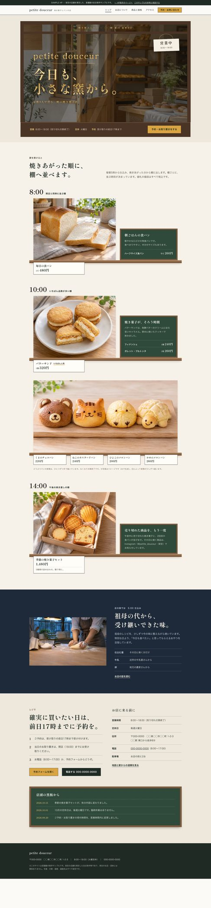
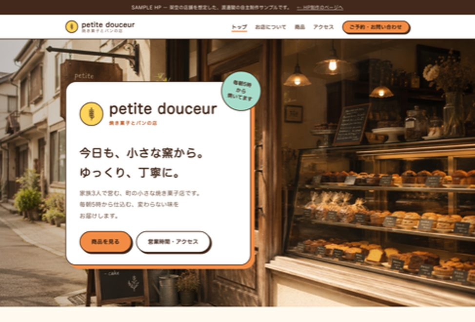
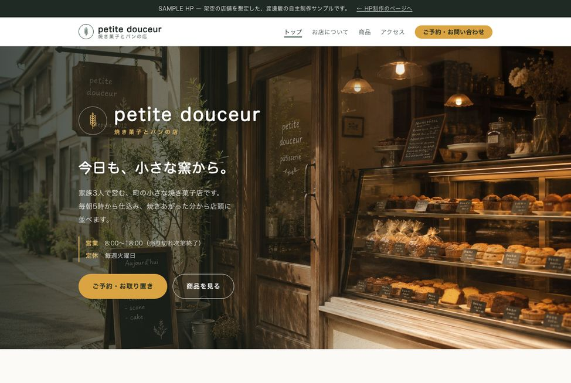
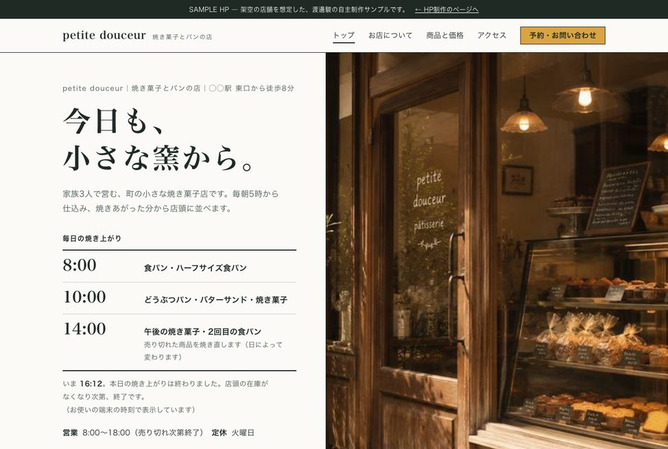

架空の焼き菓子店「petite douceur」のホームページを例に、今の制作の進め方をまとめました。同業のサイトを調べるところから、3つの案を比べ、試作して見比べ、公開後に照合と計測をするまで。実際のご依頼でも、同じ流れで進めます。
※自主制作のサンプルで、お客様からご依頼いただいた案件ではありません。お店の名前・商品・価格もすべて架空です。
進め方は、8つの段階です。
1と2は中身を決める段階、3〜6は形を決めて作る段階、7と8は公開したあとの段階です。3〜8は、このサンプルのいちばん新しい作り直し（2026年11月）を例にしています。
同業のお店のサイトを、先に調べる。
実際のパン屋さんのサイトや紹介記事を調べ、どんな項目が載っているかを一覧にしました。自分の頭の中だけで項目を決めると、お客様が知りたいことが抜けやすいからです。
| 載せる項目 | 最初の版 |
|---|---|
| 営業時間・定休日・「売り切れ次第終了」 | あり |
| 商品と価格・アレルギーの案内 | あり |
| 焼き上がりの時間 | 足した |
| 取り置きの受付時間と、締め切り | 足した |
| その日の焼き上がりを知らせる先（SNS） | 足した |
| 駐車場・イートインの有無 | 足した |
| 贈り物の包装・発送の可否 | 足した |
「売り切れ次第終了」のお店では、来る前に「何時に何が焼き上がるか」「取り置きは何時まで頼めるか」を知りたい人が多いはずです。そこで、商品のページに焼き上がりの時間を、ご予約のページに取り置きの締め切りを入れました。
参考にした記事：静岡新聞アットエス（パン屋の紹介記事）ほか
ページの数と、それぞれに載せることを決める。
調べた項目を、5つのページに振り分けました。デザインに入る前に、ここで中身を固めます。
| ページ | 載せること |
|---|---|
| トップ | お店の雰囲気、お知らせ、大事にしていること、人気の商品、どうぶつパン |
| お店について | お店の成り立ち、一日の流れ、家族3人の紹介 |
| 商品 | 焼き菓子とパンの一覧・価格、アレルギーの案内、焼き上がりの時間 |
| アクセス | 営業時間、住所、駐車場、イートインの有無、駅からの道順 |
| ご予約 | 取り置き・予約のフォーム、受付時間と締め切り、よくある質問 |
参考と今の形を見比べ、問題を言葉にする。
作り直す前の版を撮影し、同業のサイトや、ほかの業種で作り直したサンプルと並べて見比べました。「なんとなく古い」で終わらせず、どこが・なぜ問題なのかを言葉にしてから、案を考えます。
| 見つけた問題 | なぜ問題か |
|---|---|
| 最初の画面が定番の形 | 写真全体を暗くして、左に大きな見出しとボタンを置く形でした。業種が違っても使える型で、このお店でなければならない理由がありませんでした |
| 同じ並びの繰り返し | 5:00から18:00までの5つの段が、どれも「左に大きな時刻、右に写真と文章」でした。時刻は見出しの代わりになっているだけでした |
| パンが主役になっていない | 最初の画面は店先の写真で、商品の写真は各段の中で小さく収まっていました |

3つの案を出し、1つを選んでいただく。
問題を解く方向の違う案を3つ出し、それぞれの気になる点も添えます。実際のご依頼では、ここでお客様に選んでいただきます。今回は自主制作のため、自分で選びました。
| 案 | 中身 | 気になる点 |
|---|---|---|
| A 店先のガラス越し（選んだ案） | 最初の画面を店のガラス戸にする。ガラスに金文字で店名、向こうに店内の棚。扉を開けると、棚に商品と値札が並ぶ | 金文字の質感が出せるかは、試作で確かめる |
| B 今あるパンだけのページ | 見る人の端末の時刻に合わせて、今棚にあるパンを大きく出す | 時刻で見た目が変わり、紹介用の画像と実際の画面が違って見える |
| C 紙袋 | 最初の画面をクラフト紙の紙袋の面にし、袋から商品が出てくる見せ方にする | 紙の質感を出すには、新しい写真が要る |
Aを選んだのは、今ある写真で作れること、そして来店を決めるのに要る営業時間・定休日・予約の締め切りを、最初の画面の中に置けるからです。
最初の画面と一部だけ試作し、並べて見比べる。
いきなりサイト全体を作り変えず、最初の画面と、商品の棚の段だけを公開しない場所で試作しました。作り直す前の版と同じ幅で並べた画像を作り、見比べて判断していただきます。形が決まる前に全ページを作ると、方向を変えるときの手戻りが大きくなるためです。

決まった形を、サイト全体に組み込む。
試作の形が決まってから、サイト全体に組み込みます。値段・商品・営業時間・お知らせは、前の版から変えていません。組み込んだあとは、パソコンの幅（1440px・1024px）とスマホの幅（375px）で、横へのはみ出し・画像の読み込み・メニューの開閉を確かめました。
| 組み込んだこと | 理由 |
|---|---|
| 最初の画面を、店のガラス戸に | 窓枠とガラスの向こうに店内の棚を見せ、店名と見出しはガラスに書いた金文字に。写真に文字を載せるだけの定番の形をやめるため |
| 扉の札が、時刻で変わる | 見る人の端末の時刻で「営業中」「準備中」「本日終了」「定休日」に変わります。今行って開いているかが、最初の画面でわかるように |
| 営業時間と予約を、窓の下の框に | 営業時間・定休日・予約の締め切りと予約のボタンを、最初の画面の中に置くため |
| 商品は、棚板と値札で並べる | 8時・10時・14時の棚板に商品の写真を載せ、棚板の前に紙の値札を差しました。説明と、写真のない商品の値段は、棚に立てた黒板に。焼きあがる時刻ごとに、店の棚を見るように選べるように |
| そのあとは、店の奥 → レジ → 黒板 | 仕込みと祖母の代からの話、予約の決まりとお店の情報、お知らせの順。店の中を歩く順番に合わせました |


ページ全体で見ると、次のように変わりました。


公開したファイルを、1つずつ照合する。
公開したあと、手元のファイルと公開中のファイルが同じかを、1つずつ照合します。画面を見るだけでは、上げ忘れや古いファイルの残りに気づきにくいためです。
今回は15ファイルのうち、事例ページのシェア用の画像1枚が反映されていませんでした。次の公開で上げ直し、すべて一致することを確かめました。照合のあと、ブラウザーで公開中のページを開き、新しいデザインと画像が読み込まれていることも確認しています。
表示の速さを測り、直す。
Googleの計測ツール「PageSpeed Insights」で、公開中のページをスマホの条件で測りました。1回目は91点でした。原因を調べると、スマホでは、窓の上の細い部分にパソコン用の大きな写真を使っていて、写真を2種類読み込んでいました。スマホではどちらもスマホ用の写真を使うように直し、測り直しました。
いちばん大きな要素が表示されるまでの時間（LCP）は、3.2秒から2.7秒になりました。
※2026年11月15日、公開中のトップページを、直す前と直した後に1回ずつ計測した値です。計測する環境や日によって変わります。サンプルは架空のお店のため、検索結果には出さない設定にしています。
これまでの版。
このサンプルは、公開したあとも見直しを続けています。最初はポップな作りでしたが、見返すたびに「生成AIで作ったサイトによくある形」が残っていることに気づき、作り直してきました。今の形は6つ目の版です。




写真はすべて画像生成AIで作ったイメージです。
実際のご依頼でも、同じ流れで進めます。
調べる → 中身を決める → 問題を言葉にする → 3つの案から選んでいただく → 試作を見比べる → 全体に組み込む → 公開後に照合し、測って直す。お店の方にお話をうかがいながら、この順番で一緒に作っていきます。